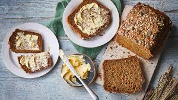

Irish Treacle Bread
Home

Description
A rich dark bread with a hint of sweetness. It is sweeter than soda bread and just as easy to make. A delicious no-yeast bread that will be ready in next to no time
Ingredients
- 250g plain flour
- 250g fine oatmeal
- 1 tsb of salt
- 2 tsp bicarbonate of soda
- 2 tbs black treacle
- 250ml buttermilk (or 200ml milk and 50ml yoghurt)
Steps
- Preheat oven to 200 degrees celcius
- Mix all the dry ingredients in a large bowl
- Tip in the liquids into the centre
- Mix with a wooden spoon
- Knead only once or twice
- Form it into a round shape and place on a baking tray
- Cut a deep cross across the bread
- Cook for around 40mins or until it makes a hollow sound when the bottom is tapped
- Cool on a rack and enjoy!